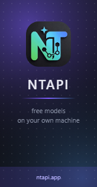
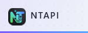

ยินดีต้อนรับสู่ NTAPI
ผู้ช่วยเขียนโค้ดที่ทำงานในเครื่องคุณ ต่อกับโมเดลฟรีได้ทันที
ใช้พื้นที่ประมาณ 320 MB · Windows 10/11 (64-bit)
ภาพที่เห็นคือไฟล์ BMP/ICO ที่จะถูกฝังลงตัวติดตั้งจริง (ยังไม่ได้ต่อเข้า build)

ผู้ช่วยเขียนโค้ดที่ทำงานในเครื่องคุณ ต่อกับโมเดลฟรีได้ทันที
ใช้พื้นที่ประมาณ 320 MB · Windows 10/11 (64-bit)

กำลังแตกไฟล์และสร้างทางลัด กรุณารอสักครู่